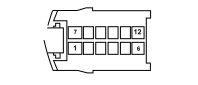

D001 FRONT/DASHBOARD COUPLING (DASHBOARD)
- Path
- Electrical equipment > 3 CONNECTORS > D INTERMEDIATE COUPLINGS > D001 FRONT/DASHBOARD COUPLING > D001 FRONT/DASHBOARD COUPLING (DASHBOARD)
- Kind
- connector pinout (pin -> wire colour -> other end)
- Applies to
- all engines; all production periods
- Interactive page
- https://sloeber94.github.io/elrnDB-fPnd/en/#/169003033
Applies to: all engines; all production periods

Wiring | Colour |
|---|---|
- |
Pin | Cable | Destination | |||
|---|---|---|---|---|---|
Sec.. | Colour | Node | Connect. | Pin | |
1 | 0,5 | BN (white with black stripe) | 9 | ||
4 | 0,5 | MN (brown with black stripe) | 6 | ||
5 | 0,35 | MV (brown with green stripe) | 11 | ||
6 | 1 | LN (blue with black stripe) | 30 | ||
7 | 2,5 | LR (blue with red stripe) | 23 | ||
8 | 0,35 | GR (yellow with red stripe) | 9 | ||
9 | 0,35 | GN (yellow with black stripe) | 6 | ||
10 | 0,35 | CN (orange with black stripe) | 10 | ||
11 | 0,35 | LG (blue with yellow stripe) | 5 | ||
12 | 2,5 | V (green) | 17 | ||